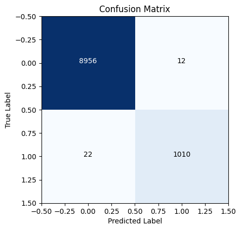

import pandas as pd
import numpy as np
from sklearn.ensemble import RandomForestClassifier
from sklearn.model_selection import train_test_split
from sklearn.datasets import fetch_openml
from sklearn.metrics import classification_report, precision_score, recall_score, f1_score, confusion_matrix
import matplotlib.pyplot as plt
from tqdm import tqdm
import psutilImports
Load data
X, y = fetch_openml('mnist_784', version=1, data_home='data', return_X_y=True, as_frame=False)/home/patel_zeel/miniconda3/lib/python3.9/site-packages/sklearn/datasets/_openml.py:1002: FutureWarning: The default value of `parser` will change from `'liac-arff'` to `'auto'` in 1.4. You can set `parser='auto'` to silence this warning. Therefore, an `ImportError` will be raised from 1.4 if the dataset is dense and pandas is not installed. Note that the pandas parser may return different data types. See the Notes Section in fetch_openml's API doc for details.
warn(X_train, X_test, y_train, y_test = X[:60000], X[60000:], y[:60000], y[60000:]
print(X_train.shape, X_test.shape, y_train.shape, y_test.shape)(60000, 784) (10000, 784) (60000,) (10000,)Check if things are working as expected
%%time
clf = RandomForestClassifier(n_estimators=100, max_depth=10, random_state=0, n_jobs=psutil.cpu_count()//2)
clf.fit(X_train, y_train)
preds = clf.predict(X_test)
print(classification_report(y_test, preds)) precision recall f1-score support
0 0.96 0.99 0.97 980
1 0.98 0.99 0.98 1135
2 0.94 0.94 0.94 1032
3 0.94 0.94 0.94 1010
4 0.95 0.93 0.94 982
5 0.96 0.93 0.94 892
6 0.96 0.97 0.96 958
7 0.95 0.92 0.94 1028
8 0.94 0.93 0.93 974
9 0.88 0.94 0.91 1009
accuracy 0.95 10000
macro avg 0.95 0.95 0.95 10000
weighted avg 0.95 0.95 0.95 10000
CPU times: user 1min 33s, sys: 652 ms, total: 1min 34s
Wall time: 3.73 sConvert to one v/s rest problem
y_c = (y == '2').astype(np.int8)
y_c_train, y_c_test = y_c[:60000], y_c[60000:]Check if things are working as expected
clf = RandomForestClassifier(n_estimators=100, max_depth=10, random_state=0, n_jobs=psutil.cpu_count()//2)
clf.fit(X_train, y_c_train)
preds = clf.predict(X_test)print("Precision", precision_score(y_c_test, preds))
print("Recall", recall_score(y_c_test, preds))Precision 0.9808988764044944
Recall 0.8459302325581395Divide data into train and pool
train_size = 200
X_train, X_pool, y_c_train, y_c_pool = train_test_split(X, y_c, train_size=train_size, random_state=42)
print(X_train.shape, X_pool.shape, y_c_train.shape, y_c_pool.shape)
# plot a bar chart of the number of samples in each class for the training and test set
unique, counts = np.unique(y_c_train, return_counts=True)
print("Number of samples in each class for training set", dict(zip(unique, counts)))
print("One v/s rest ratio", counts[0]/counts[1], "for training set")(200, 784) (69800, 784) (200,) (69800,)
Number of samples in each class for training set {0: 179, 1: 21}
One v/s rest ratio 8.523809523809524 for training setProf. Ermon’s method
X_train, X_pool, y_c_train, y_c_pool = train_test_split(X, y_c, train_size=train_size, random_state=42)
print(X_train.shape, X_pool.shape, y_c_train.shape, y_c_pool.shape)
clf = RandomForestClassifier(n_estimators=100, max_depth=10, random_state=0, n_jobs=psutil.cpu_count()//2)
clf.fit(X_train, y_c_train)
preds = clf.predict(X_test)
test_recall = [recall_score(y_c_test, preds)]
test_precision = [precision_score(y_c_test, preds)]
positives = [np.sum(y_c_train)]
negatives = [len(y_c_train) - positives[-1]]
labeling_cost = [0]
tp = np.where((preds == 1) & (y_c_test == 1))[0]
fp = np.where((preds == 1) & (y_c_test == 0))[0]
print("Test: Number of false positives", len(fp), "Number of true positives", len(tp))
print("Iteration", 0, "Precision", test_precision[-1], "Recall", test_recall[-1], "Cost", labeling_cost[-1])
al_iters = 10
for iter in range(al_iters):
print()
preds = clf.predict(X_pool)
# pred_proba = clf.predict_proba(X_pool)
# print(pred_proba.shape)
# identify instances predicted as positive but are actually negative (false positives)
# we only pick points with more than 90% probability of being positive
# fp = np.where((pred_proba[:, 1] > 0.8) & (y_pool == 0))[0]
fp = np.where((preds == 1) & (y_c_pool == 0))[0]
tp = np.where((preds == 1) & (y_c_pool == 1))[0]
fn = np.where((preds == 0) & (y_c_pool == 1))[0]
print("Pool: Number of false positives", len(fp), "Number of true positives", len(tp), "Number of false negatives", len(fn))
tp_fp = np.concatenate((tp, fp))
# add them to the training set
X_train = np.concatenate((X_train, X_pool[tp_fp]))
y_c_train = np.concatenate((y_c_train, y_c_pool[tp_fp]))
positives.append(np.sum(y_c_train))
negatives.append(len(y_c_train) - positives[-1])
# remove from the pool set
X_pool = np.delete(X_pool, tp_fp, axis=0)
y_c_pool = np.delete(y_c_pool, tp_fp)
# add the cost of labeling to the list
labeling_cost.append(len(tp_fp))
# train the classifier again
clf.fit(X_train, y_c_train)
# predict on the test set
preds = clf.predict(X_test)
tp = np.where((preds == 1) & (y_c_test == 1))[0]
fp = np.where((preds == 1) & (y_c_test == 0))[0]
fn = np.where((preds == 0) & (y_c_test == 1))[0]
print("Test: Number of false positives", len(fp), "Number of true positives", len(tp), "Number of false negatives", len(fn))
# calculate precision and recall
test_recall.append(recall_score(y_c_test, preds))
test_precision.append(precision_score(y_c_test, preds))
# print information
print("Iteration", iter+1, "Precision", test_precision[-1], "Recall", test_recall[-1], "Cost", labeling_cost[-1])
labeling_cost = np.cumsum(labeling_cost)(200, 784) (69800, 784) (200,) (69800,)
Test: Number of false positives 8 Number of true positives 283
Iteration 0 Precision 0.9725085910652921 Recall 0.2742248062015504 Cost 0
Pool: Number of false positives 73 Number of true positives 1884 Number of false negatives 5085
Test: Number of false positives 209 Number of true positives 932 Number of false negatives 100
Iteration 1 Precision 0.8168273444347064 Recall 0.9031007751937985 Cost 1957
Pool: Number of false positives 1389 Number of true positives 4386 Number of false negatives 699
Test: Number of false positives 489 Number of true positives 1016 Number of false negatives 16
Iteration 2 Precision 0.6750830564784053 Recall 0.9844961240310077 Cost 5775
Pool: Number of false positives 4088 Number of true positives 598 Number of false negatives 101
Test: Number of false positives 12 Number of true positives 1006 Number of false negatives 26
Iteration 3 Precision 0.9882121807465619 Recall 0.9748062015503876 Cost 4686
Pool: Number of false positives 18 Number of true positives 15 Number of false negatives 86
Test: Number of false positives 10 Number of true positives 1010 Number of false negatives 22
Iteration 4 Precision 0.9901960784313726 Recall 0.9786821705426356 Cost 33
Pool: Number of false positives 13 Number of true positives 5 Number of false negatives 81
Test: Number of false positives 11 Number of true positives 1010 Number of false negatives 22
Iteration 5 Precision 0.9892262487757101 Recall 0.9786821705426356 Cost 18
Pool: Number of false positives 5 Number of true positives 2 Number of false negatives 79
Test: Number of false positives 10 Number of true positives 1011 Number of false negatives 21
Iteration 6 Precision 0.990205680705191 Recall 0.9796511627906976 Cost 7
Pool: Number of false positives 5 Number of true positives 1 Number of false negatives 78
Test: Number of false positives 9 Number of true positives 1011 Number of false negatives 21
Iteration 7 Precision 0.9911764705882353 Recall 0.9796511627906976 Cost 6
Pool: Number of false positives 5 Number of true positives 2 Number of false negatives 76
Test: Number of false positives 11 Number of true positives 1010 Number of false negatives 22
Iteration 8 Precision 0.9892262487757101 Recall 0.9786821705426356 Cost 7
Pool: Number of false positives 5 Number of true positives 2 Number of false negatives 74
Test: Number of false positives 9 Number of true positives 1010 Number of false negatives 22
Iteration 9 Precision 0.9911678115799804 Recall 0.9786821705426356 Cost 7
Pool: Number of false positives 3 Number of true positives 1 Number of false negatives 73
Test: Number of false positives 12 Number of true positives 1010 Number of false negatives 22
Iteration 10 Precision 0.9882583170254403 Recall 0.9786821705426356 Cost 4# plot the confusion matrix
import itertools
cm = confusion_matrix(y_c_test, preds)
plt.imshow(cm, interpolation="nearest", cmap=plt.cm.Blues)
# add the numbers inside the boxes
thresh = cm.max() / 2.0
for i, j in itertools.product(range(cm.shape[0]), range(cm.shape[1])):
plt.text(j, i, cm[i, j], horizontalalignment="center", color="white" if cm[i, j] > thresh else "black")
plt.title("Confusion Matrix")
plt.xlabel("Predicted Label")
plt.ylabel("True Label")Text(0, 0.5, 'True Label')
pd.DataFrame({"Cost": labeling_cost, "Train_Positives": positives, "Train_Negatives": negatives, "Test_Precision": test_precision, "Test_Recall": test_recall})| Cost | Train_Positives | Train_Negatives | Test_Precision | Test_Recall | |
|---|---|---|---|---|---|
| 0 | 0 | 21 | 179 | 0.972509 | 0.274225 |
| 1 | 1957 | 1905 | 252 | 0.816827 | 0.903101 |
| 2 | 7732 | 6291 | 1641 | 0.675083 | 0.984496 |
| 3 | 12418 | 6889 | 5729 | 0.988212 | 0.974806 |
| 4 | 12451 | 6904 | 5747 | 0.990196 | 0.978682 |
| 5 | 12469 | 6909 | 5760 | 0.989226 | 0.978682 |
| 6 | 12476 | 6911 | 5765 | 0.990206 | 0.979651 |
| 7 | 12482 | 6912 | 5770 | 0.991176 | 0.979651 |
| 8 | 12489 | 6914 | 5775 | 0.989226 | 0.978682 |
| 9 | 12496 | 6916 | 5780 | 0.991168 | 0.978682 |
| 10 | 12500 | 6917 | 5783 | 0.988258 | 0.978682 |